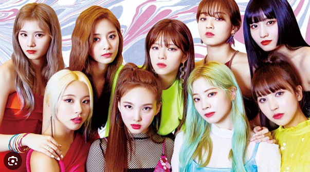

Twice
Twice se originó a partir de un programa de “reality show” en 2015 llamado "Sixteen" que involucró a varias "trainees" de JYP Entertainment, término utilizado para referirse a aspirantes a ídolos que se preparaban para un posible debut, compitiendo por un lugar en la alineación final del grupo.
Algunas de sus canciones son
- The Fells
- Set me Free
- What is Love?